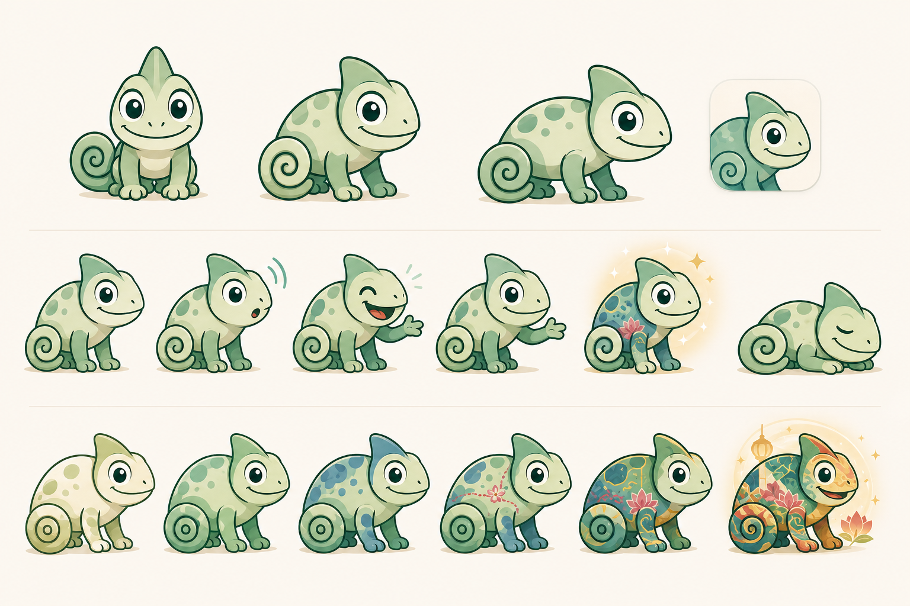
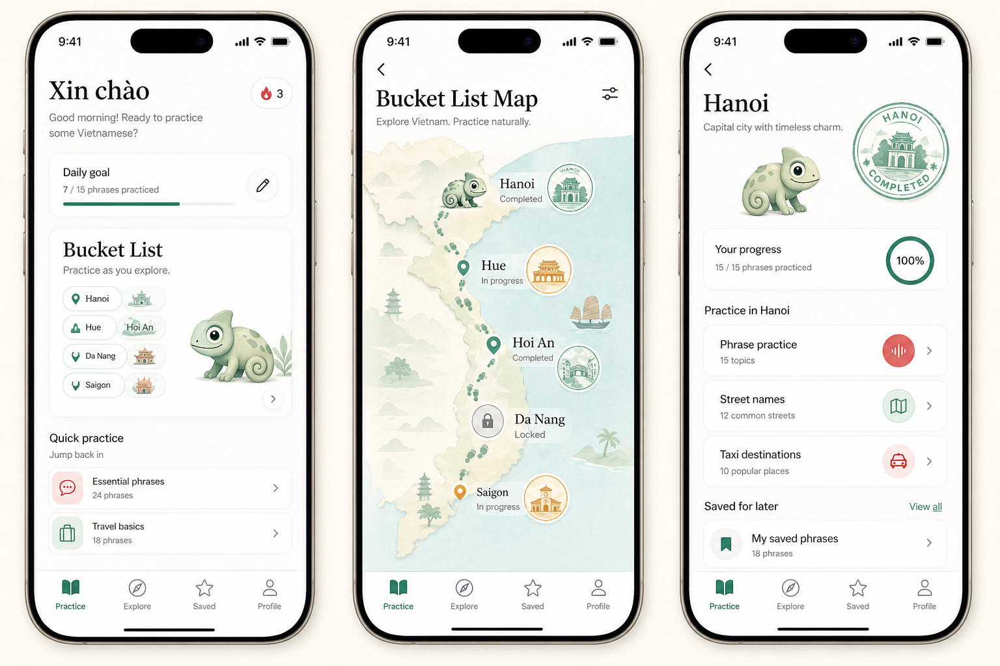
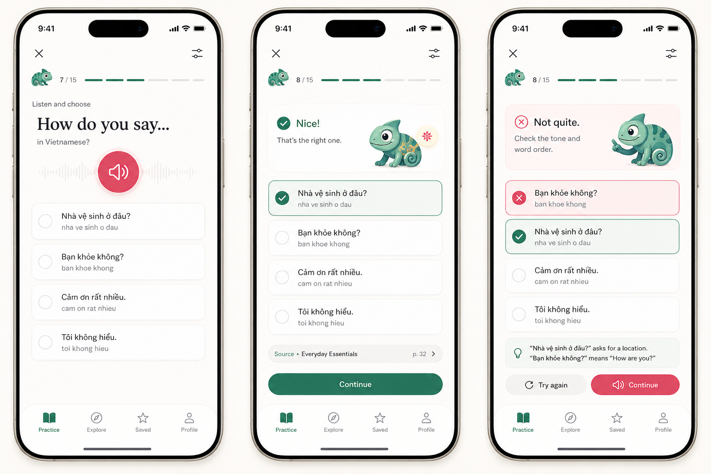

Melo travels country to country. Vietnam colors are a layer, not the character identity.
Melo Bucket List Concepts
A locked next-step concept packet for Speak Local and Speak Local Vietnam. Melo is the shared chameleon mascot, the travel progress model is Bucket List, and Vietnam city/street-name practice becomes the first concrete country implementation.
Brand: Speak Local
App: Speak Local Vietnam
Mascot: Melo
Progress: Bucket List
Surface: Bucket List Map
Content arrives from content side
Bucket List feels more natural than path language because users can care about a country, city, or situation.
Melo reacts to practice moments, but phrase content, audio, and corrections remain primary.

Locked Art Step
Create a production Melo sheet with front, three-quarter, side, and tiny icon sizes; idle, listening, correct, gentle correction, bucket list updated, and rest states; plus a neutral base and six shared unlock stages.
The production export should use transparent PNG/WebP assets with consistent canvas and anchor point so SwiftUI can swap states without layout jumps.

Map Concept
The Bucket List Map should show what Melo has practiced and what the user still wants to learn. It can support country, city, and practice-set scopes without implying everyone must follow the same sequence.
Completed items earn a Bucket List Stamp. In-progress items show partial Melo color. Locked or unstarted items keep the neutral silhouette.

Practice Behavior
Melo should live near the progress strip or feedback card, never inside answer choice hit targets. Correct answers can add a tiny color patch or stamp shimmer. Gentle corrections should feel calm and useful.
Sensitive, emergency, medical, or safety contexts should hide Melo or reduce the mascot to a neutral mark.
Native Handoff Model
hidden, idle, listening, correct, gentleCorrection, bucketListUpdated, rest.
base, firstPhrases, cityRhythm, travelerConfidence, streetReady, countryAttuned, fullyUnlocked.
country, city, practiceSet. Street-name packs can attach to city or saved-practice scopes.
locked, inProgress, completed, savedForLater.
country, city, completion date, progression stage, mascot asset key.
Content team supplies phrase pages, street-name pages, and audio rows. The app consumes them.
melo/<countryLayer>/<state>/<stage>/<view>, with square transparent PNG/WebP assets and a stable baseline anchor.